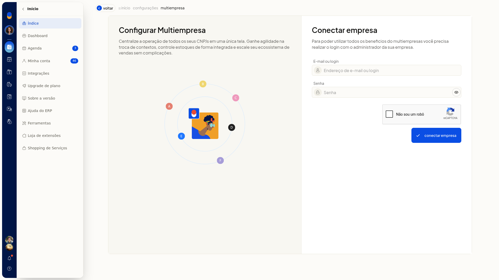
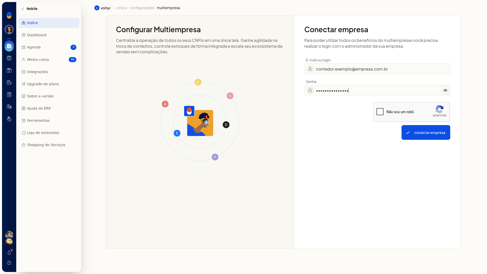
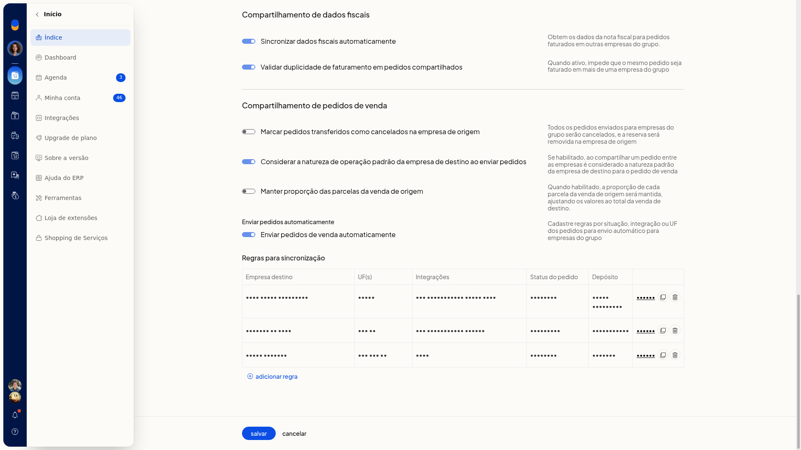
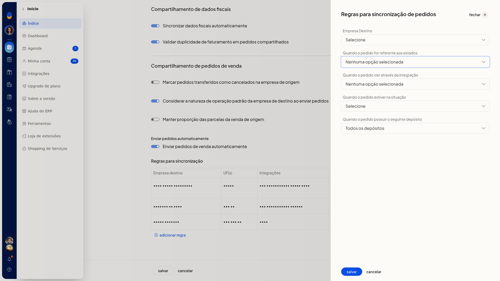
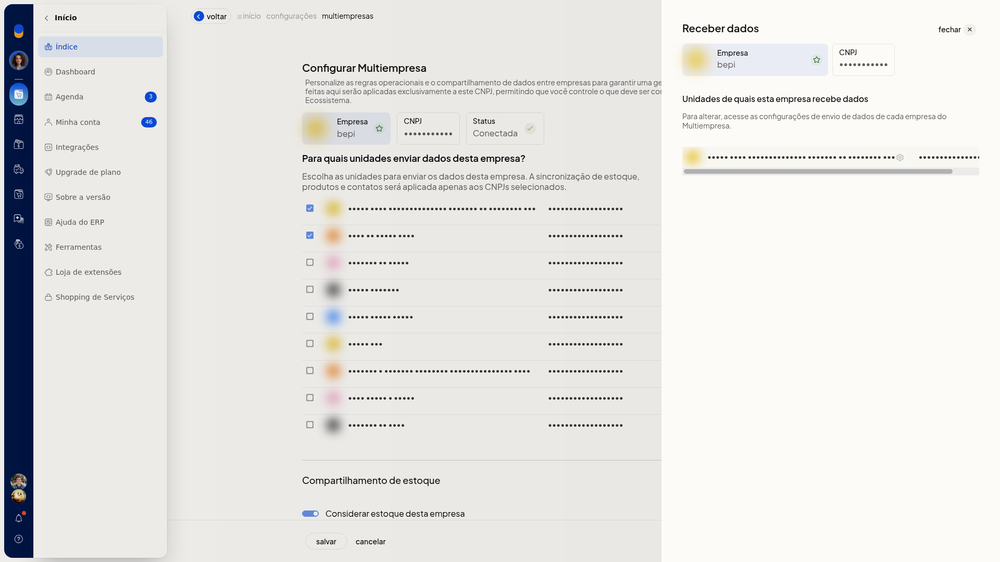
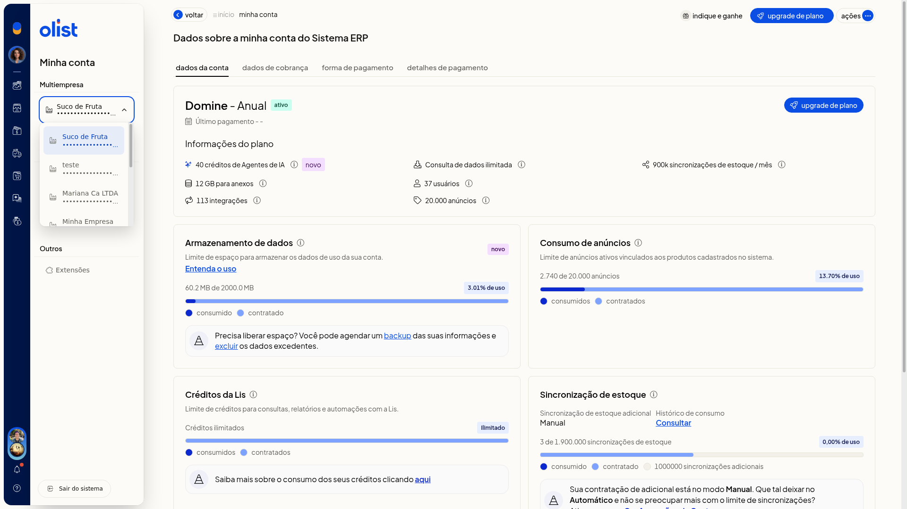
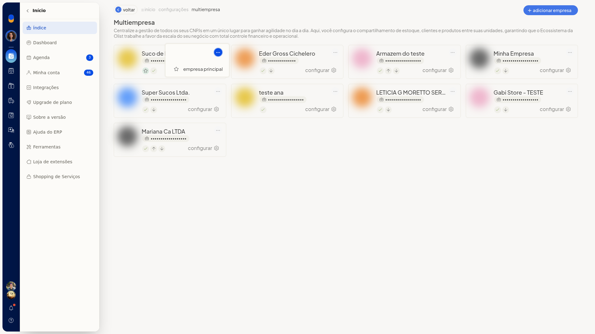
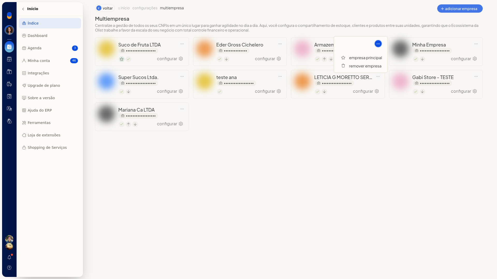

Multiempresa: configurar várias empresas (CNPJs)
A Multiempresa do ERP da Olist reúne os CNPJs vinculados. Você conecta outras empresas, define o que cada unidade compartilha e passa a operar em outra empresa do grupo pelo seletor em Minha conta.
O compartilhamento pode incluir estoque, clientes, produtos, pedidos e dados fiscais. A lista Multiempresa explica a centralização dos CNPJs e mostra um card por empresa vinculada.
Pré-requisitos
- Para conectar outra empresa, tenha o email ou login e a senha da conta dessa empresa.
- Se Multiempresa não aparecer, peça acesso ao administrador da conta.
Importante
- O painel De quais unidades esta empresa recebe? apenas lista quem envia. A mudança é feita na configuração de envio da empresa de origem.
- A opção de como os produtos são ligados só aparece para empresas liberadas nessa funcionalidade. Ela deixa de aparecer se a empresa já usa o vínculo permanente.
- Ao ativar o vínculo permanente, a configuração é replicada às empresas conectadas e não pode ser desfeita.
- Para salvar com Enviar pedidos de venda automaticamente ligado, é preciso ter ao menos uma regra de sincronização.
- O local logístico externo só pode ser informado em regra com uma única integração Shopify.
- No card da empresa principal, o menu de ações mostra empresa principal. remover empresa aparece no menu de um card que não é a principal.
Instruções
Abrir a lista pelo menu
-
No menu lateral, clique em Configurações.
-
Clique em Configurações ERP.
-
Na tela Configurações do Sistema ERP, com Geral ativo, clique em Multiempresa, em Outras configurações.

A lista abre com Voltar, Adicionar empresa e um card por empresa vinculada.
Abrir a lista por Minha conta
-
Clique no avatar da empresa no menu lateral para abrir Minha conta.
-
Clique em Gerenciar Multiempresa.

Conectar outra empresa
-
Na lista Multiempresa, clique em Adicionar empresa.

-
Preencha E-mail ou login e Senha da conta a conectar. Mostrar senha revela o que foi digitado.

-
Conclua a verificação exibida no formulário.
-
Clique em conectar empresa para concluir o vínculo.
Configurar o compartilhamento
-
Na lista, clique em configurar no card da empresa.

-
Marque as unidades em Enviar dados para. Há uma caixa por unidade já vinculada.
-
Ajuste estoque, catálogo, regra de vínculo de produtos e as opções fiscais e de pedidos. A tela mostra o que já estava salvo.

Estoque
- Marque Considerar estoque desta empresa se o estoque desta unidade entra no compartilhamento.
- Em Estoque considerado na API, escolha De todas as empresas do grupo ou Apenas desta empresa.
- Em Saldo do kit, escolha Saldo final do kit ou Saldo dos itens do kit. O saldo dos itens confere o estoque dos componentes entre as empresas e calcula o kit pelo saldo unificado.
Catálogo
Marque o que esta empresa deve compartilhar: Dados do cliente, Dados do produto, Dados de contatos e Dados de produtos.
Vínculo e campos do produto
Em Regra de vínculo de produtos, escolha SKU (recomendado), SKU ou GTIN ou SKU, GTIN ou descrição do produto.
Os campos opcionais de produto no compartilhamento são Localização, Estoque mínimo e máximo, Fornecedor, Preço de custo e médio, Preço de venda e promocional e Origem do produto.
Fiscal e pedidos
Ajuste estas opções:
- Sincronizar dados fiscais automaticamente
- Validar duplicidade de faturamento em pedidos compartilhados
- Marcar pedidos transferidos como cancelados na empresa de origem
- Considerar a natureza de operação padrão da empresa de destino ao enviar pedidos
- Manter proporção das parcelas da venda de origem
- Enviar pedidos de venda automaticamente
- Clique em salvar para gravar. cancelar volta à lista sem gravar.
Criar regra de sincronização de pedidos
-
Em configurar, marque Enviar pedidos de venda automaticamente. A seção Regras para sincronização aparece.

-
Na seção Regras para sincronização, clique em Adicionar regra.

-
Preencha a regra:
- Empresa Destino: uma empresa já marcada para receber dados
- Quando o pedido for referente aos estados: as UFs de AC a TO ou Selecionar todas
- Quando o pedido vier através da integração: Sem integração ou um canal já conectado à empresa
- Quando o pedido estiver na situação: Em aberto, Faturado, Cancelado, Aprovado, Preparando envio, Enviado, Entregue, Pronto para envio, Dados incompletos, Não entregue ou Em devolução
- Quando o pedido possuir o seguinte depósito: Todos os depósitos ou um depósito já cadastrado

-
Clique em salvar para gravar a regra. cancelar fecha o painel sem gravar. Na lista de regras, use editar, Clonar regra ou Remover regra.
Consultar as unidades que enviam dados
-
Em configurar, clique em De quais unidades esta empresa recebe?.
-
Leia a lista de unidades que enviam dados para a empresa aberta. Para alterar quem envia, mude o envio na configuração da empresa de origem.

Operar em outra empresa do grupo
-
Clique no avatar da empresa no menu lateral para abrir Minha conta.

-
Expanda o seletor de empresa. As empresas listadas já estão vinculadas ao grupo, e a empresa atual permanece marcada.

-
Selecione a empresa vinculada em que deseja operar.
Ajustar a empresa principal ou remover a empresa
-
Na lista Multiempresa, clique no botão de mais ações do card.
-
Escolha empresa principal.

-
Em um card que não é a empresa principal, o mesmo menu também oferece remover empresa.

-
Confirme somente se quiser alterar o grupo.
Resultado
A lista Multiempresa mostra um card por empresa vinculada, com documento, ícones de status e o link configurar. O seletor em Minha conta lista as empresas vinculadas e mantém a empresa atual marcada. A tela configurar mostra as opções de compartilhamento já gravadas da empresa aberta.
Informações adicionais
- Os ícones do card indicam Empresa principal, Conectada, Enviando dados para esta empresa e Recebendo dados desta empresa.
- O status de cada empresa na lista pode ser principal, conectada, enviando dados ou recebendo dados.
- Lista de dados compartilhados abre, em outra aba, o artigo de ajuda Multiempresa - Configurações.